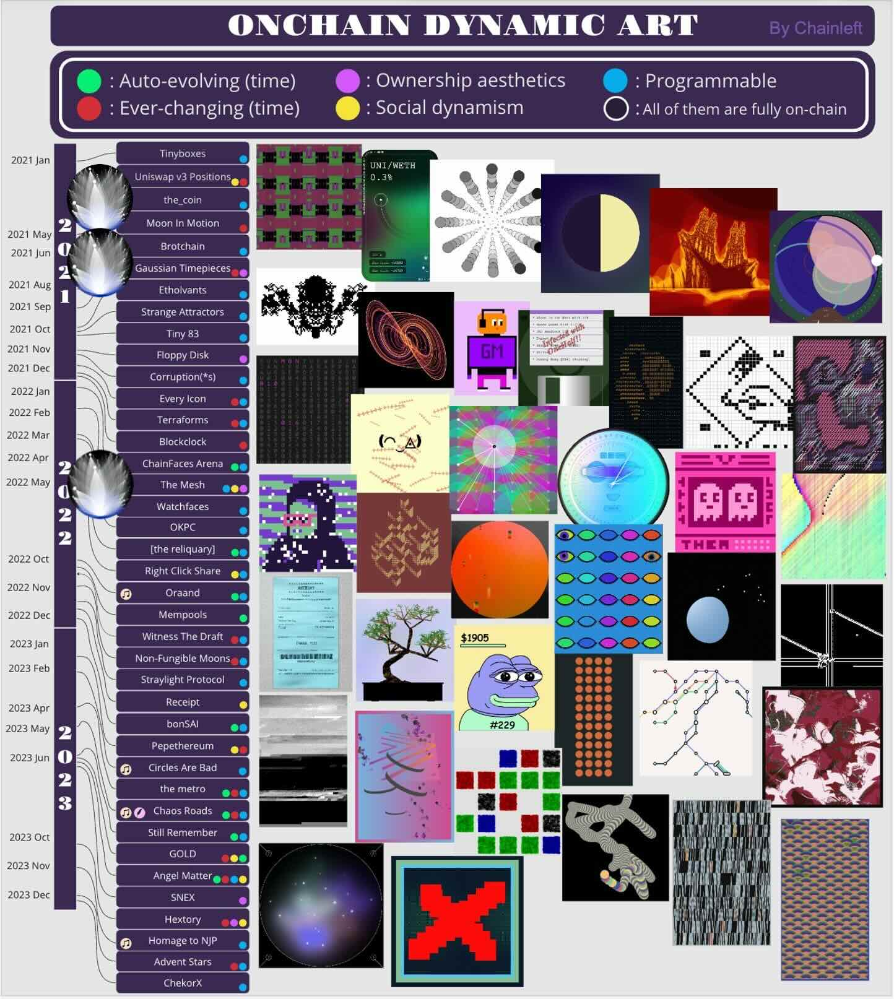

Nov., 2025 Featured as creator on CSA2D7's McCarren Park Bench to discuss with Yigit Duman various features of cryptoart and blockchain.
Jun., 2025 Attentional Dynamics included in the DAM GENESIS Collection. See promo video here.
Sep., 2024 I scratched then fully restored a brilliant on-chain NFT by Yigit Duman: "Rothko on Pennies." See here for Yigit's closing notes about this project, notes about my restoral, and my thread here about first scratching the work and this thread about restoring it. This fun on-chain adventure also summarized in Simon de la Rouviere's blog.
Apr., 2024 De-Automated featured at #NFTNYC2024! Artwork exhibited in person at the Artists Village (North Javits, Hudson Yards, April 3-5, 2024).
Feb., 2024 Prominent artist, surveyer, data wrangler Chainleft offered a historical progression of
dynamic NFTs in which my projects feature prominently as early programmable, dynamic assets. You can see it below,
annotated near my projects in the left timeline.

Chainleft's history of dynamic
NFTs
Feb., 2024 Metrix project included as part of inaugural collection for The Function Gallery release, an artist-led initiative for art inscribed on Bitcoin. You can also visit my artist's channel on their Discord.
Feb., 2024 Perpetual featured in MASSAGE MAGAZINE based in Tokyo: "Perpetualのコンセプトは非常に興味深く、日本語ではイサーリアムnaviで詳細が紹介されています。"
Oct., 2023 Visualization and The Mesh featured in Simon de la Rouviere's article about the unlikely death of NFTs.
Aug., 2023 Release party at imnotArt gallery in Chicago with Patternbase (scroll down here to see images from the show).
Feb., 2023 Featured in JPG's Value Flows physical exhibition at NFT Paris 2023. The Mesh project seen here in their installation, adapted from token updates with on-chain data.
Aug., 2022 Discovery of Ethermine OFAC-related filtering featured in CryptoSlate coverage and Eric Wall blog post
Sep., 2022 Gallery curated by JPG showcasing some past work. In conjunction with the "New Home" initiative.
Jul., 2022 Work Sunrise from Reflective Recursion featured in MoCDA's Digital Trends Ep. 76: YouTube, Twitter
Mar., 2022 Project The Mesh featured in Simon de la Rouviere's blog post: Building Expansive NFT Universes: CC0, Fidelity, & On-Chain Bundling
Feb., 2022 Data visualization featured in Craig Warmke's article: Bitcoin Behind the Veil
Sep., 2021 Data visualization featured in CoinDesk article: Ethereum's Design Choices Are Inherently Political
Mar., 2021 "Birth" (from Ethstory) featured in NFT article by Nic Carter: Why NFTs Are Hard to Explain
Jan., 2020 Network ownership visualization featured in Devin Finzer's OpenSea NFT Bible
Dec., 2019 Zima Red interview about many retired crypto data analysis tools: The Anonymous Coder Creating Data Visualization Tools For The NFT Ecosystem and Much More